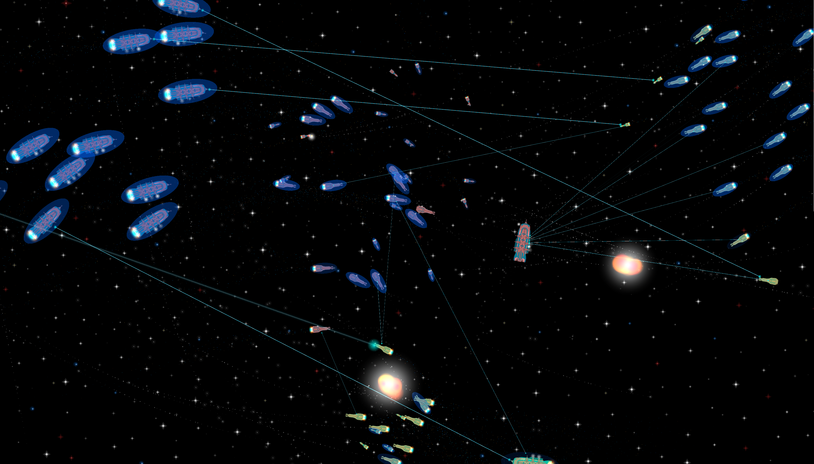
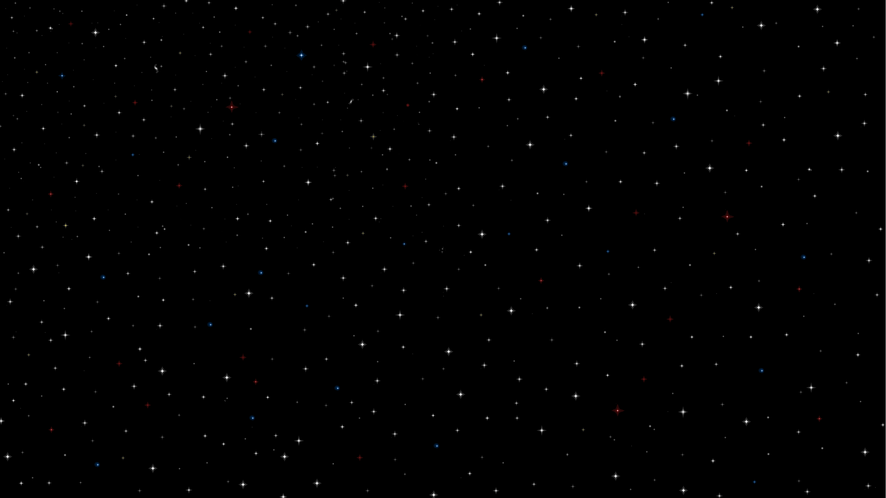
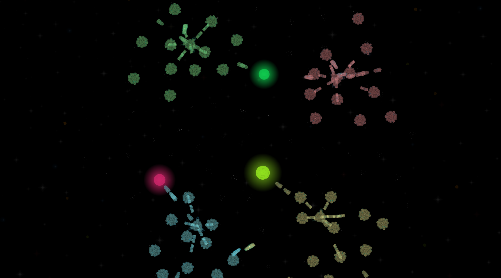
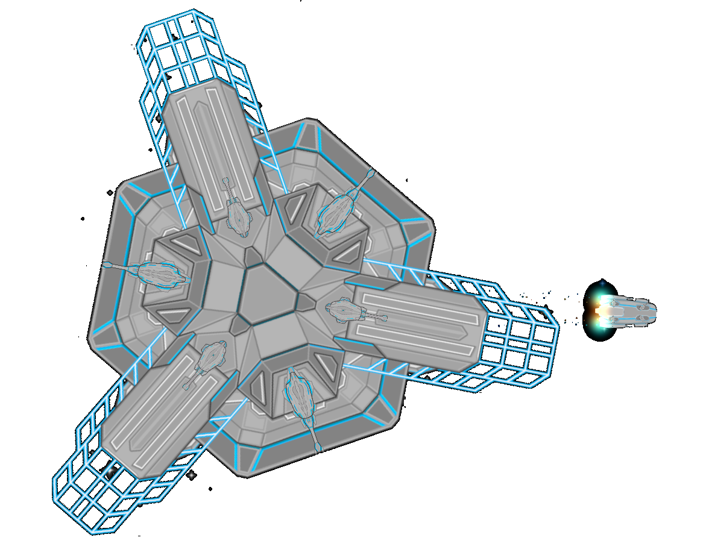
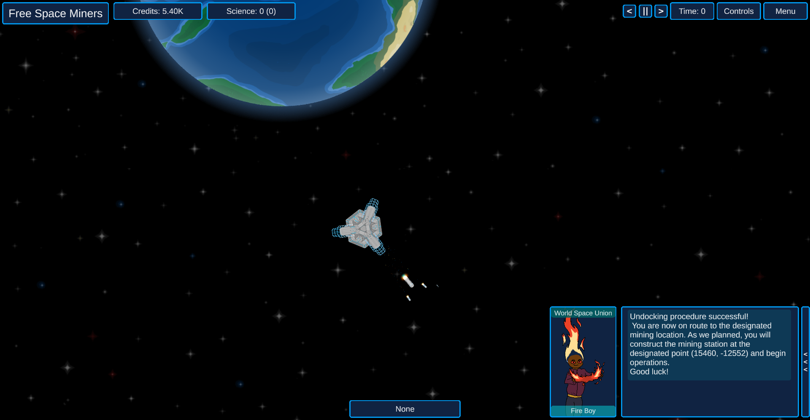
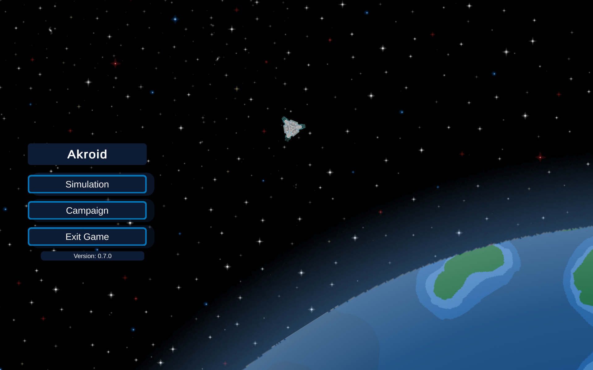
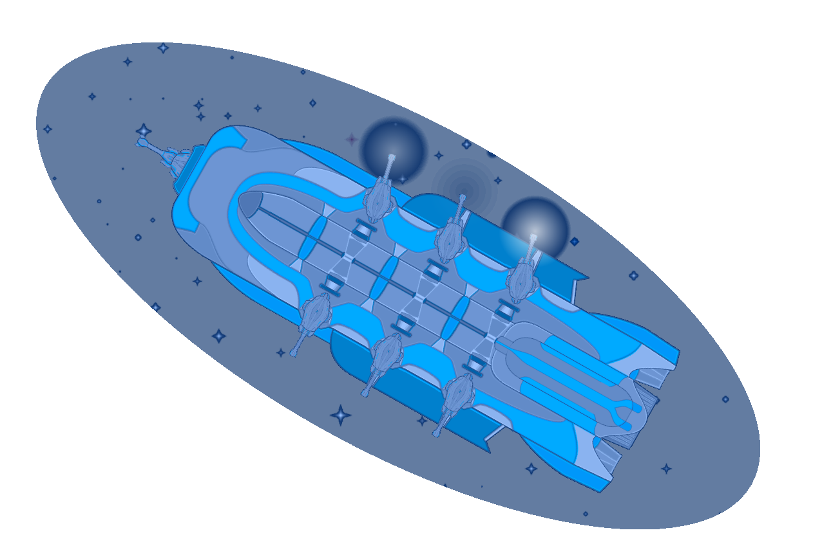

A Space Real Time Strategy Game
Build ships, command fleets and conquer space!
WebGL Demo



About
Akroid is a personal project that I started to simulate space battles that expanded to become a full
RTS.
All the code, story and art are original to this game.
I created the ships, stations, planets and environment images and the characters were created by a
family member of mine.
The first goal of this project is to keep the project as Free and Open Source as possible.
The second is to create a new, unique and timeless game to engage players with.

Gameplay
In the standard RTS style, the base game mode has multiple factions in the same solar system.
Each faction starts off with a main station called the fleet command, 4 mining stations, 4
transports and 1 gas collector.
Mining stations slowly mine the asteroid fields close to them and store the metal in their cargo
bay.
Transport ships take the cargo from the mining station and drop it off at the fleet command.
Gas collectors move to the gas clouds at the edge of the solar system to collect gas and bring it
back to the fleet command as well.
The fleet command can use its construction bay to build more transports, gas collectors, mining
stations, science ships and combat ships as long as it has enough resources.
The construction bay can also upgrade the components on the fleet command, or any ship in its
hangar.
Science ships research the stars and bring their data back to the fleet command, data can be used to
improve the efficiency of weapons, thrusters and shields.
Combat ships can be put into fleets to form more effective combat units, they use projectile
turrets, laser turrets and missile launchers to fight other factions.
The game ends when there is only one faction remaining.

Campaign
The campaign game mode starts off with a tutorial and then explains the lore of the civilization.
The civilization has just reached the space age and the planet is running out of resources.
The player controls a mining station that is tasked with supplying the planet with some much-needed
resources.
Tension on the planet is building as the resources are becoming scarce.
Will you the be able to help expand the space industry in time to prevent war and explore the rest
of space?

Change Log
v0.9.0
In-progress or completed features for the v0.9.0 release aiming to improve the user experience
- Better UI indicators for campaign instructions
- Added a selection outline around all selected or highlighted units
- Continued Parallelization of more parts of the code
- Added an asynchronous loading screen to prevent the program from freezing
- Added projectile turret, laser turret and ship thrusters sound effects
- WebGL Demo
v0.8.0
The main goal of v0.8.0 was to refactor the entire project separating the UI from the game logic. Apart from some performance improvements there weren't any major changes to any game features.
- Restructured the entire project
- Made the game logic ready to have test cases
- Parallelized parts of the game such as finding enemies, updating projectiles, and other non-state changing calculations
- Improved code readability and maintainability

Next Steps
My immediate plans are to polish the game, improve the UI, add sound effects, parallelization
and other UX focused changed.
I am also thinking about making fleet combat a little more interesting and interactive so that the
player has a reason for looking at the battles.
After these changes I plan on starting another big project which is implementing multiplayer.
I would also like to make a save system to save and load games, however this will likely come after
multiplayer.
I am planning to release the game for free on Steam and some other distributions as well.